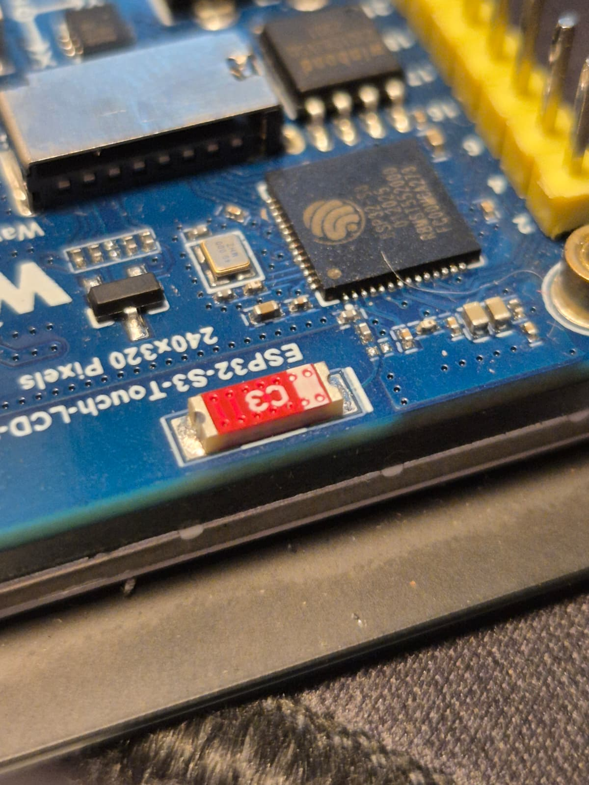
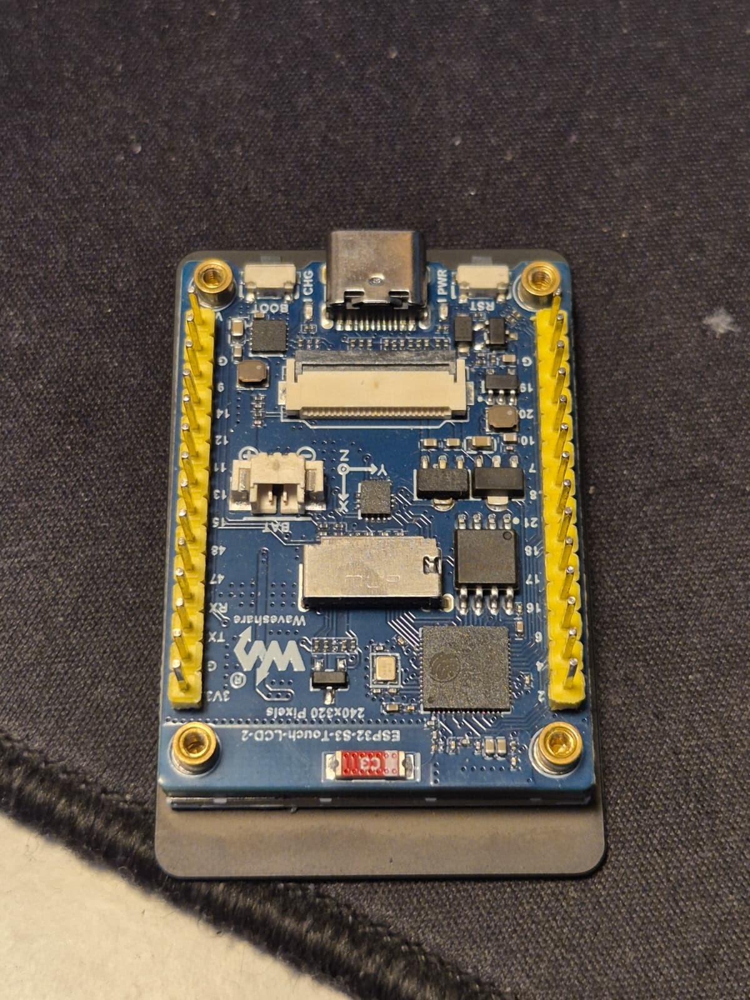
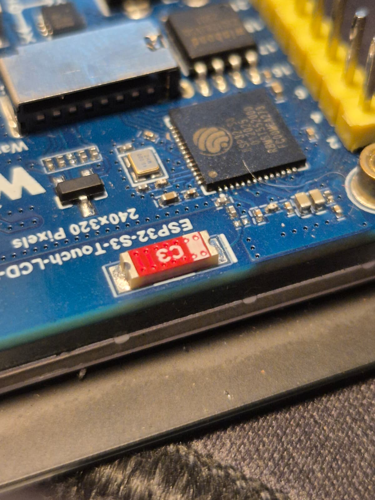
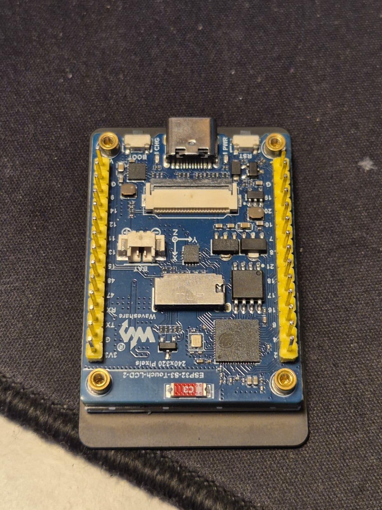

Voordat we echt aan het project konden beginnen moesten we eerst onderzoek doen naar de doelgroep wat Neurodiverse mensen zijn. Mijn teamgenoten hebben hiervoor een paar simulaties gedaan en daar informatie uitgehaald over hoe het nou is en wat voor symptomen. Ik was helaas niet bij deze les, en u heeft goedgekeurd als ik het zo beschreef. Daarnaast hebben we ook nog met 3 verschillende typen neurodiverse mensen interviews gedaan. We hadden besloten om iedere persoon dezelfde vragen te stellen en hebben die dan ook zelf bedacht. Dit zijn onze 7 bedachte vragen:
We hebben ook deze keer weer een pinterest gebruikt voor ons marktonderzoek. Dit is de link naar het marktonderzoek: https://pin.it/42Km3Njhj (PS: kopieer en plak de link als het niet werkt)
Wij merkten dat bij dyslexie het probleem groot was, en ook toen ik zelf naar wat mensen keek die ook dyslexie hebben, bedachten we dat we die dus als doelgroep wouden kiezen. Degene die dit hebben hebben over het algemeen moeite met lezen en schrijven. Het verschild bij iedereen, maar de meeste hebben wel in gemeen dat de letters er anders uit zien en ook moeite of zelfs pijn krijgen na lange texten lezen. We kregen gelijk al een paar ideeën voor en bedachten toen dat we willen proberen om een product te maken die met dit probleem zou kunnen helpen. Ook hebben we PvE(Programma van Eisen) gemaakt voor eventuele help.
PDF bestand - PvE (Programma van Eisen)
Bij het brainstormen hebben we de taak verdeeld onder ons 3tjes. Dus ieder van ons heeft een andere type brainstorm gepakt en die uitgewerkt. Ik zelf heb CRAZY 8 gedaan, Lynden heeft mindmap gebruikt en Thom heeft How might we gebruikt. Door onze brainstorm samen te combineren hadden we een groter, verschillend en dus ook bredere focus om door te gaan naar ons gekozen idee.
Dit is mijn CRAZY 8:
.jpg)
.jpg)
Dit is Lynden's Mindmap:

Dit is Thom's How Might We:
PDF bestand - How Might We BrainstormAls eerst hebben we het eerste prototype gemaakt uit karton. Dit was een hele simpele prototype en ook meer zodat we konden zien hoe groot het ongeveer zou zijn en het idee maar een klein beetje uitgewerkt. Als je kijkt naar het 2de prototype zie je ons idee en bedoeling als product een beetje vorm en leven krijgen. Hier is het eigenlijk nog een skeletje met alleen nog de camera, scherm en moederbord waarna in het eindproduct er een "case", LED's en productsverpaking bij komt.


Nadat ons 2de prototype klaar was zijn we nog even naar 2 personen met dyslexie toegegaan die het wel wilden uittesten. Na het testen van ons prototype hebben ze ons nog wat tips en tops gegeven op wat eventueel beter kan en wat al goed is. De feedback die we hebben gekregen is:
Testsubject 1: Dat we het beter op een batterij of oplaadbare batterij konden laten werken in plaast van bekabelt.
Testsubject 2: Het verbeteren van de software, met name de connectie tussen de camera en het scherm aangezien dat niet het beste was.
Nu we deze informatie hebben gekregen zijn we gelijk weer terug gegaan om de dingen toe te passen. Helaas zijn niet alle toepassingen gelukt, maar we hebben wel verbeter puntjes als dit ontwerp verder uit zou gewerkt worden.
Het project heeft een tijdje geduurd en er is ook veel vooruitgang gemaakt, daarom heb ik allerlei foto's van het process hier onder geplaatst om zo veel mogelijk van het process te laten zien.
Dit zijn foto's van het process met het product:


 



Dit zijn foto's van het process met het productsverpaking:


Dit zijn de 3 verschillende schetsen:


Dit zijn 3 foto's van de bouwtekeningen:


Ons final eindproduct is het kleine digitaal apparaatje dat wij de READER+ hebben genoemd. Het bestaat uit een camera die de tekst opneemt en die "goed" zet op het beeldschermpje. Er zitten LED's bij voor als het te donker is en de case is ge-3Dprint. Het omzetten word gedaan doormiddel van de software die Thom heeft gemaakt. Daarnaast heb ik ook een productsverpaking gemaakt om het echt over te laten komen als een prodcut en ook om de READER+ ergens in te laten. Aan de zijkanten zit een QR-code en een Barcode die moesten leiden naar de bouwtekening van de READER+, helaas had ik niet rekening meegehouden dat het alleen werkt als je de bouwtekening als pdf al zelf hebt gedownload. Voor de rest heb ik het netjes versierd met ook een quote aan de binnen kant. "Vaarwel leesttress, Hallo leesplezier" Dit beschrijft letterlijk wat de READER+ doet, en je kunt hem zelfs gelijk uit testen op de quote. Hier zijn de foto's van ons totale Eindproduct:


Dit project was een best leuk project om te doen. Het was redelijk uitgebreid van interviews naar onderzoeken tot een heel eigen product dat mensen potentieel had kunnen helpen. Ook bij dit project ging de samenwerking weer erg goed zoals normaal en ben ik blij dat ik dit leuke project heb mogen doen met Thom en Lynden. We hebben onderling samen afspraken gemaakt, elkaar rollen gegeven, het werk gesplitst en we houden ons daar dan ook aan. In totaal heb ik een brainstorm gemaakt, samen met Lynden het marktonderzoek gedaan, schetsen gemaakt, interview gedaan, interview vragen gemaakt, de productsverpaking gemaakt en onderling hier en daar geholpen mee en meegedacht. Thom heeft vooral de software en het product gemaakt, en lynden hielp met de theoretisch dingen en ook nog meer. Maar dat is heel simpel even gezegd, we hebben wel meer gedaan maar dat zijn dan meer de kleine dingetjes. Volgens mij was dit het laatste project, maar ben ik wel blij dat ik Productontwerpen heb gekozen. Het waren vaak erg leuk projecten om te doen maar ook gezellig ondanks dat je bezig bent. Alvast bedankt voor deze mooie lessen. Terug naar het project, denk ik dat het overall heel goed is gegaan en we ook een tof eindresultaat hebben behaald.